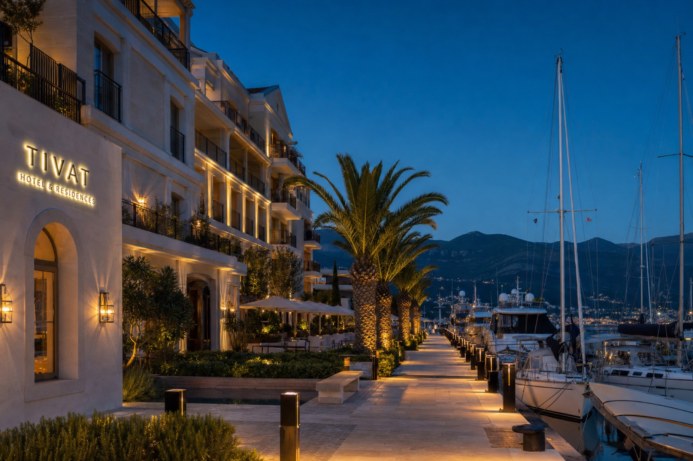
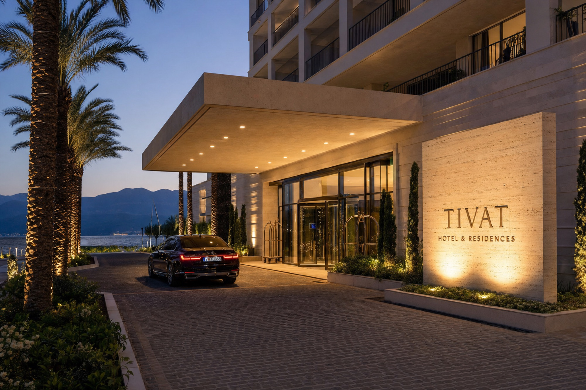
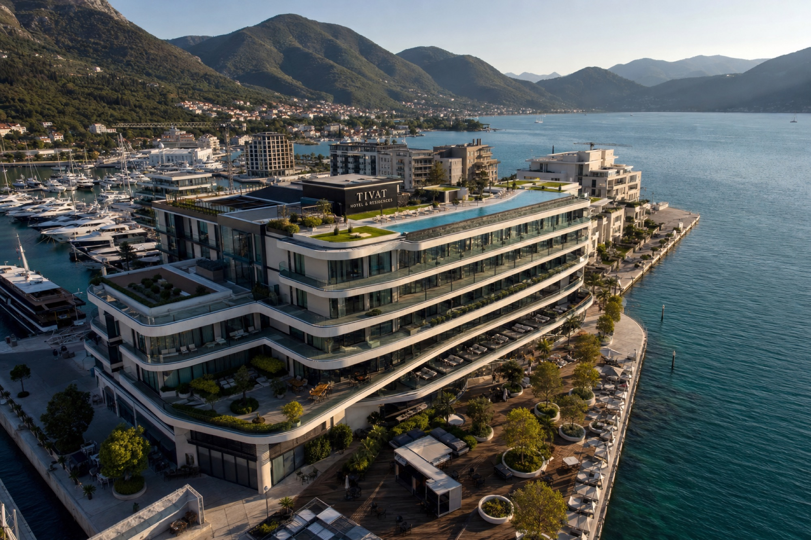
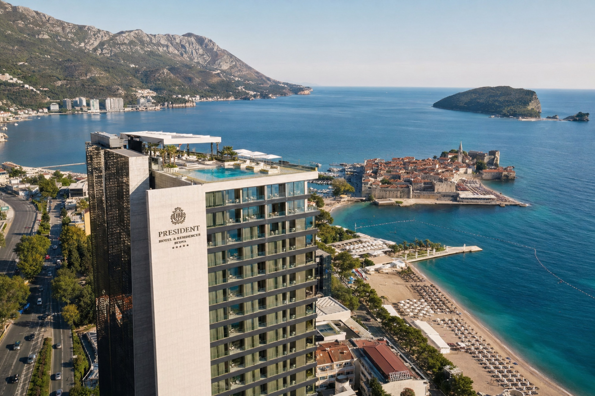

The Setting
A coast in soft light.






Boka Bay is a drowned river canyon of still water and steep stone, sheltered from open sea and ringed by medieval towns. Just south, the Budva Riviera opens to the Adriatic. One of the Mediterranean's last quiet coasts — and where ALK builds.


The bay's mountains break the open Adriatic, leaving water that is calm almost the whole year. Kotor and Perast hold a thousand years of stone behind them; the slopes above carry olive groves that still work.
It is close — under two hours from much of Europe — yet feels a long way from anywhere in a hurry.
Direct seasonal flights connect Tivat with London, Paris, Vienna, Zurich and Moscow. A house car and skipper are arranged for every arrival.


We will arrange flight guidance, a stay, and an unhurried day on site.